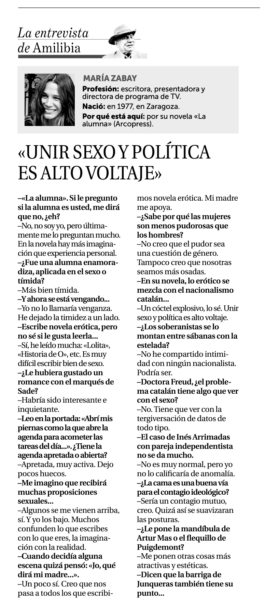

El deseo
La atracción que hace parecer inevitable lo imposible.
María Zabay · Novela / 2016
El deseo puede enamorarte.
También puede someterte.
Àlvar es el hombre que lo tiene todo. Y el profesor de Historia de Cataluña que puede hacer que Mariela crea cualquier cosa.
¿Y si el hombre que te enseña Historia también te estuviera enseñando a creer una mentira?
Lecturalia
Mariela se enamora de un hombre que sabe conquistarla. Y también sabe convencerla.
Con veinte años, estudia Derecho en Barcelona. Àlvar Colomer, su profesor de Historia Contemporánea de Cataluña, es brillante, atractivo, rico y mucho mayor que ella. Su relación comienza como un sueño, pero esconde un desequilibrio que Mariela aún no percibe.
En el aula, Àlvar defiende una visión interesada del pasado catalán y del proyecto independentista. En la intimidad, utiliza los mismos recursos para influir sobre Mariela. Oriol, un amigo suyo, le muestra contradicciones que su profesor prefiere ocultar. Poco a poco, Mariela empieza a preguntarse qué parte de lo que siente —y de lo que cree— es realmente suya.
¿Y si la persona que te ha enseñado a mirar el mundo también te ha enseñado a no ver la verdad?
EL UNIVERSO DE LA ALUMNA
La novela entrelaza el control íntimo de una relación desigual con la disputa política sobre el relato histórico de Cataluña. En ambos terrenos, la selección de los hechos y la seducción de las palabras pueden hacer pasar una versión de la realidad por la única posible.
«Una historia fascinante sobre el poder de la manipulación».
EL CORAZÓN DE LA NOVELA
El encanto de Àlvar tiene una segunda cara: es capaz de convertir sus argumentos en certezas y su voluntad en una obligación. Mariela descubrirá que la manipulación no siempre llega con amenazas; a veces se presenta como una explicación brillante, una caricia o una promesa.
La trama transcurre en la Barcelona del auge soberanista. Àlvar, defensor del independentismo, presenta a sus alumnos una lectura sesgada de la Historia de Cataluña. Oriol ayuda a Mariela a confrontar ese relato y a reconocer cómo se construye una convicción.
Y en el centro, la pregunta más difícil: ¿cómo abandonar a la persona equivocada cuando sigues enamorada de ella?
SINOPSIS
Guapo, inteligente, culto, adinerado y un poco canalla. Àlvar Colomer lo tiene todo para que Mariela, una universitaria de veinte años, pierda la cabeza por él. Y la perderá.
Él enseña Historia Contemporánea de Cataluña en Barcelona y defiende con vehemencia el independentismo. Ella se enamora sin reservas. Pero la pasión pronto descubre su lado más oscuro: Àlvar guarda secretos, tergiversa lo que conviene y trata de controlar tanto las creencias de sus alumnos como la vida de Mariela.
Mientras Oriol, un amigo, la ayuda a descubrir las grietas del relato de Àlvar, Mariela queda atrapada en un juego de deseo, política y manipulación del que quizá ya no sepa salir.
¿Quién no se ha enamorado alguna vez de la persona equivocada? Cuando por fin comprenda el engaño, puede que sea demasiado tarde. O no…
La atracción que hace parecer inevitable lo imposible.
Una relación desigual donde uno de los dos dicta las reglas.
El modo en que se altera la percepción de lo real.
Reconocer el engaño puede ser el principio de la libertad.
EN PALABRAS DE LA NOVELA
«Abrí mis piernas como la que abre la agenda para acometer las tareas del día. Una pierna en la página del día par y la otra en la del impar».
«En la novela hay más imaginación que experiencia personal».
«Es muy difícil escribir bien de sexo».
«Unir sexo y política es alto voltaje».
La distancia entre lo que alguien parece y lo que realmente es.
Mariela es una estudiante universitaria que se siente deslumbrada por su profesor. Su curiosidad y su pasión la arrastran a una relación cada vez más difícil de controlar, hasta que empieza a cuestionar la imagen que había construido de él.
Entrevistas y conversaciones sobre La alumna en prensa y radio.
Una conversación con la autora acerca de la relación prohibida, la identidad y el relato político en la novela.
Leer la entrevista ↗ 03 / RADIOFederico Jiménez Losantos y Ayanta Barilli entrevistan a María Zabay acerca de su novela.
Escuchar entrevista ↗ 04 / ENTREVISTAPublicación de la conversación con la autora. Disponible para quienes prefieran consultar el artículo.
Ver publicación ↗EL UNIVERSO DE LA AUTORA


LO QUE LA CRÍTICA OPINA DE ELLA Y DE SUS OBRAS
«Una novela impactante, sorprenderá»
«Alonso Vega es un personaje que irrita, divierte y fascina por igual. Una novela feroz, imposible de dejar»
«Con una prosa que fluye como el mejor diálogo de una serie, Valentina —valiente, imperfecta y profundamente humana— nos hace reír, suspirar y emocionarnos»
«Una mirada crítica que combina irreverencia y profundidad. Una voz potente y fresca en la narrativa contemporánea»
«Pícara, desvergonzada, Valentina se inscribe en la tradición erótica que los autores licenciosos del siglo XVIII calificaban con el eufemismo de “novela filosófica”»
«María Zabay es una de esas mentes inquietas que no se conforman con observar la realidad, necesitan diseccionarla»
Una novela sobre el deseo, la manipulación y la posibilidad de recuperar la propia voz.
LA ALUMNA / ADQUIRIR
Selecciona una tienda o consulta la ficha de la editorial. La disponibilidad la determina cada establecimiento.
LA ALUMNA / UN ADELANTO
Reproducción de las tres primeras páginas que ha facilitado la autora. Puedes ampliarlas y pasar de una a otra.
